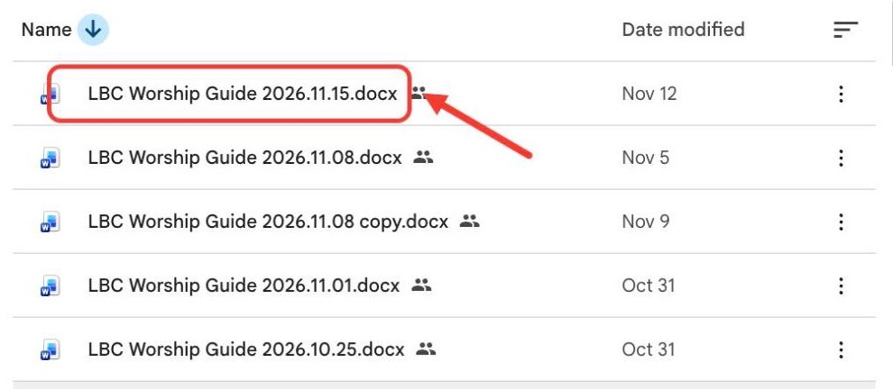
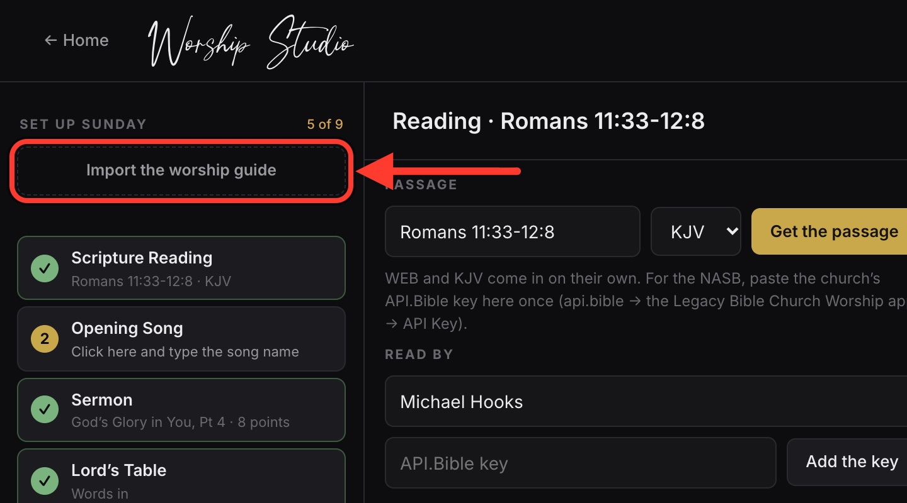
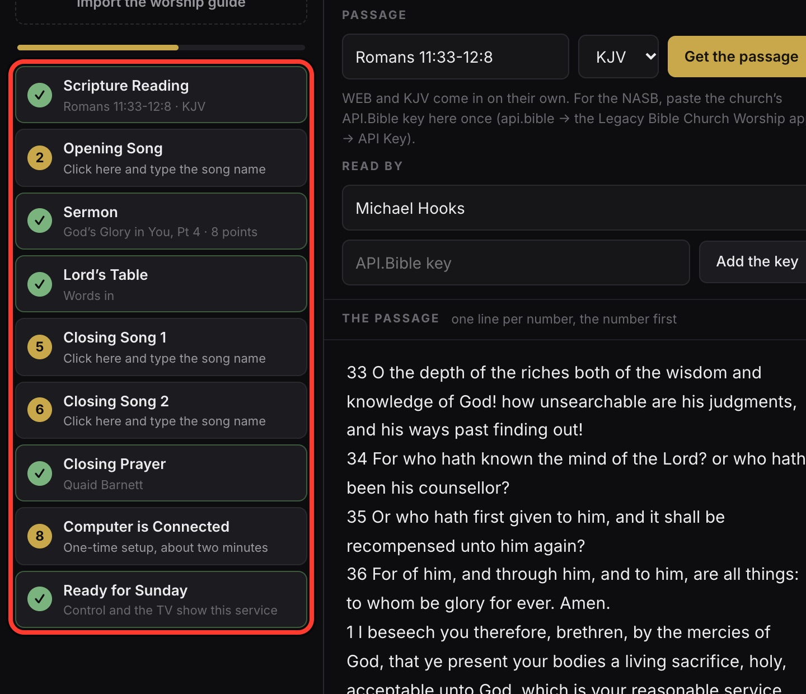
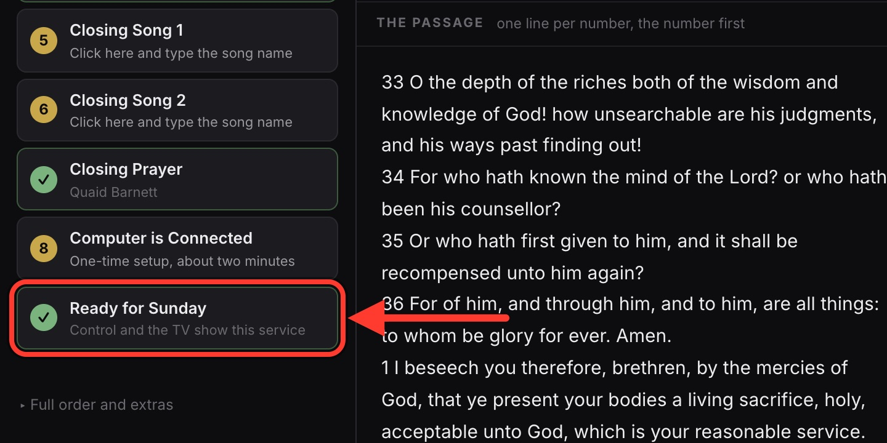
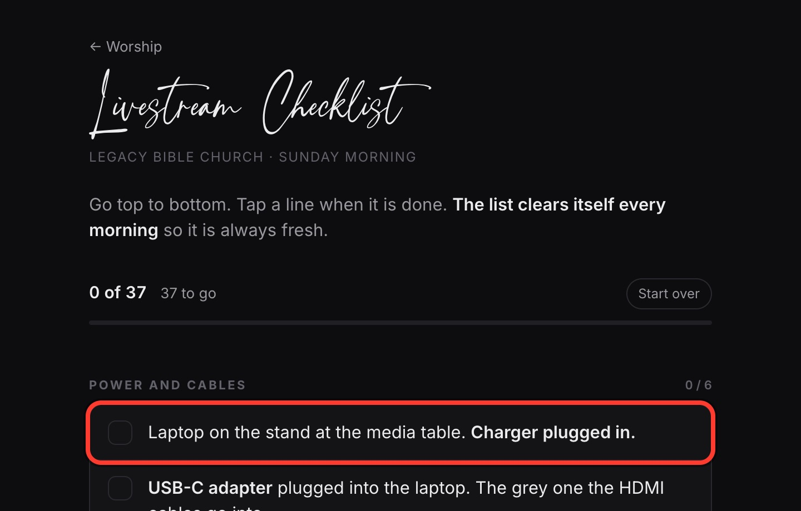
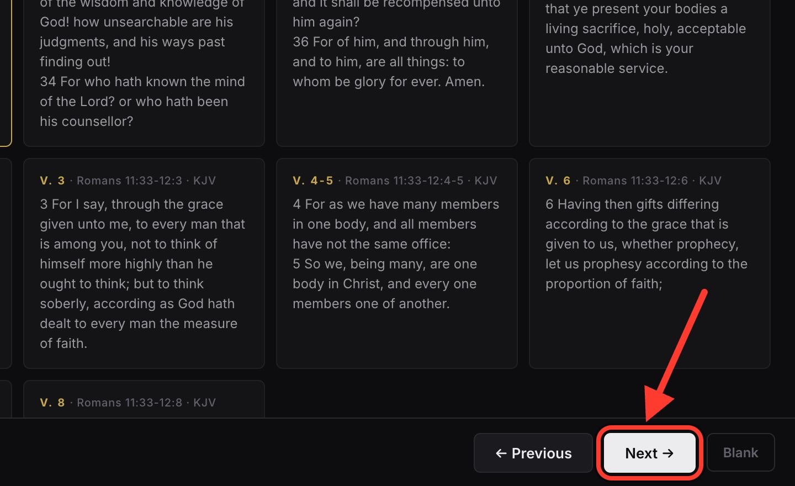

← Sunday Rotation
Guide & Slides
Legacy Bible Church
Preparation
1
Open the folder. Download
this Sunday’s worship guide
.
Not there by Thursday night? Text Pastor Todd.

Open Worship Guides →
2
Click
Import the worship guide
. Choose the file.

Open the Studio →
3
Review each row. Especially the songs.

4
Click
Ready for Sunday
.

Sunday morning
5
Print the worship guide and hand it out.
6
Livestream Checklist. Tap each line.

Open the checklist →
7
Run the slides. Closing song right after the closing prayer.

Open Run Sunday →
Resources
Worship Guides
→
Studio
→
Livestream Checklist
→
Run Sunday
→
Sunday Rotation
→